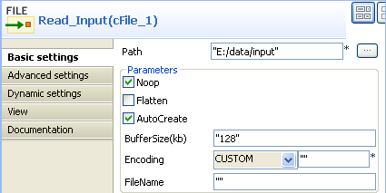
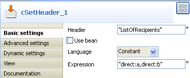
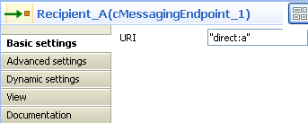
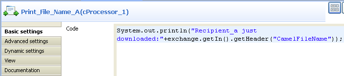
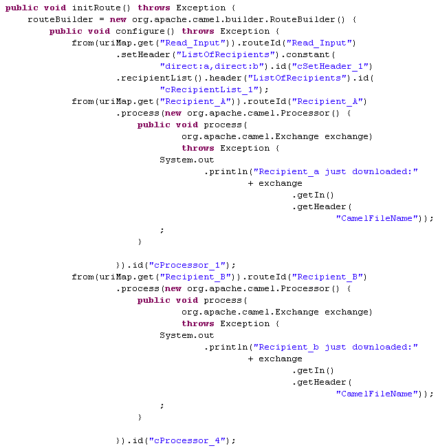

|
Component Family |
Routing | |
|
Function |
cRecipientList is designed to route messages to a number of dynamically specified recipients. | |
|
Purpose |
cRecipientList allows you to route messages to a number of dynamically specified recipients. | |
|
Basic settings |
Language |
Select the expression language from the drop-down list. |
|
|
Expression |
Type in the expression that returns multiple endpoints. |
|
|
Stop On Exception |
Select this check box to stop processing immediately when an exception occurred. |
|
|
Ignore Invalid Endpoints |
Select this check box to ignore invalid endpoints. |
|
|
Parallel Processing |
Select this check box to send the message to the recipients simultaneously. |
|
Usage |
As a middle component, cRecipientList allows you to route messages to a number of dynamically specified recipients. | |
|
Limitation |
n/a | |
In this scenario, a cRecipientList component is used to route a message to a list of recipients.

To build the Route, do the following.
Drag and drop the components from the Palette onto the workspace: cFile, cSetHeader, cRecipientList, two cMessagingEndpoint and two cProcessor. Change the label of the cFile component to Read_Input. Change the labels of the two cMessagingEndpoint components to Recipient_A and Recipient_B. Change the labels of the two cProcessor components to Print_File_Name_A and Print_File_Name_B.
Link Read_Input to cSetHeader using a Row > Route connection.
Link cSetHeader to cRecipientList using a Row > Route connection.
Link Recipient_A to Print_File_Name_A using a Row > Route connection.
Link Recipient_B to Print_File_Name_B using a Row > Route connection.
Double-click cFile to open its Basic settings view in the Component tab.
In the Path field, type in the path to the source message, for example, "E:/data/input". Keep other default settings unchanged.
Double-click cSetHeader to open its Basic settings view in the Component tab.
Click [+] to add a row to the Headers table.
In the Name field, enter the header name, for example, "ListOfRecipients".
In the Language list, select Constant.
In the Value field, enter the endpoint URIs, for example, "direct:a,direct:b".
Double-click cRecipientList to open its Basic settings view in the Component tab.

In the Language list, select Header.
In the Expression field, enter the name of the header that contains the recipients list, that is, "ListOfRecipients".
Double-click Recipient_A to open its Basic settings view in the Component tab and define the URI of recipient A.
Perform the same operation to Recipient_B to define the URI of recipient B.
Double-click Print_File_Name_A to open its Basic settings view in the Component tab and enter the code below to print out the message received by Recipient_A.
System.out.println("Recipient_a just downloaded:"+exchange.getIn().getHeader("CamelFileName"));Perform the same operation to Print_File_Name_B and type in the code below in its code box:
System.out.println("Recipient_b just downloaded:"+exchange.getIn().getHeader("CamelFileName"));Press Ctrl+S to save your Route.
Click the Code tab at the bottom of the design workspace to check the generated code.
As shown above, the route gets the message from
Read_Input, and.setHeader("ListOfRecipients")recipients using.constant("direct:a,direct:b"). Then,cRecipientList_1reads.header("ListOfRecipients")and routes the message to the recipients included in it.Press F6 to execute the Route.
The message is sent to recipients included in the header.